Phase IV · Almost Full
Becoming Manora
More confident. More herself. Every version of her becoming part of the woman she is today.
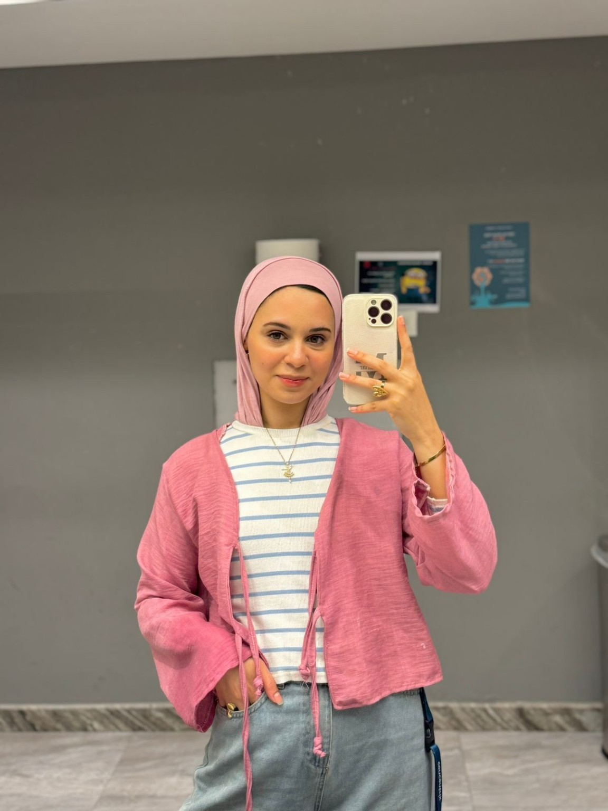


26 years ago, a light was born.
Not all light arrives at once. Some of it grows, changes and learns… until one day, it becomes a full moon.
Before the titles, the milestones and the woman she would become — there was a little girl already carrying her own kind of light.
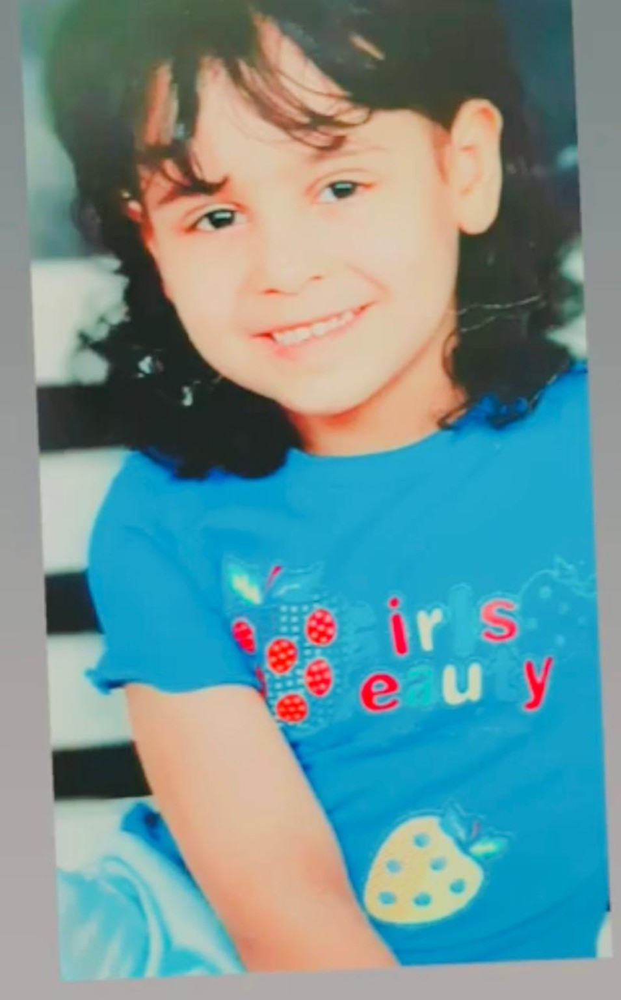
Years passed, dreams grew bigger, and that little spark learned how to shine in her own way.
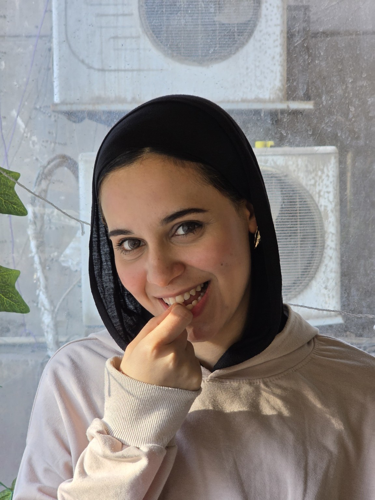
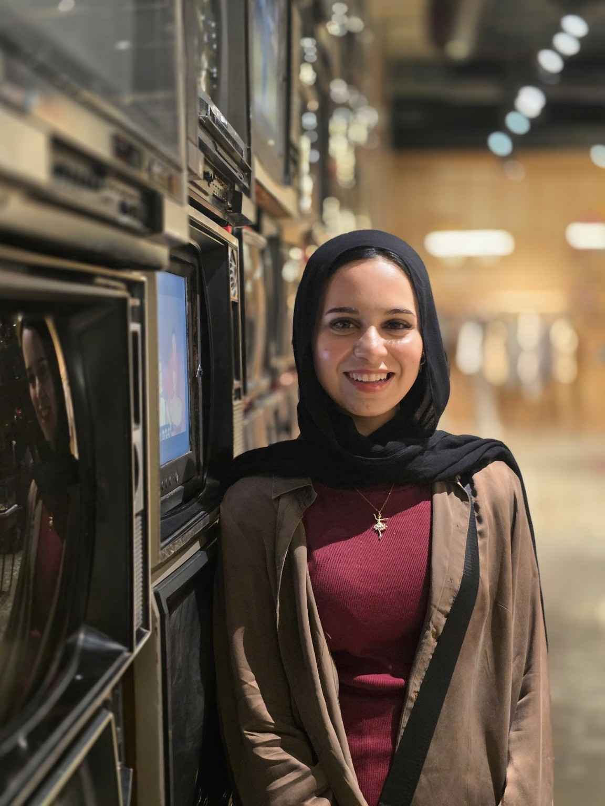
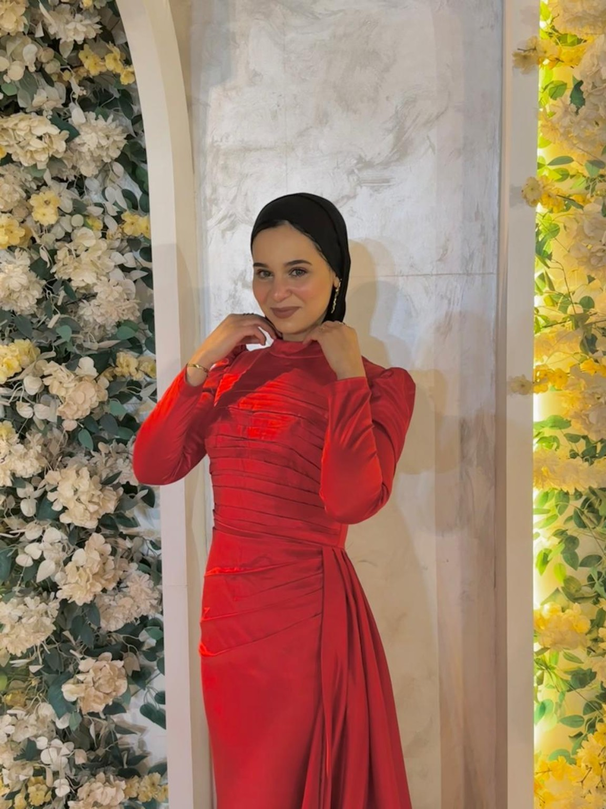
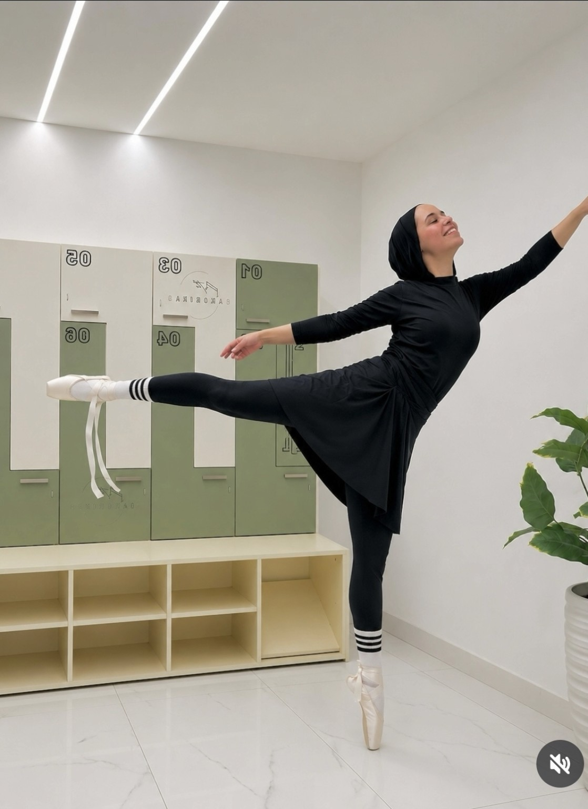
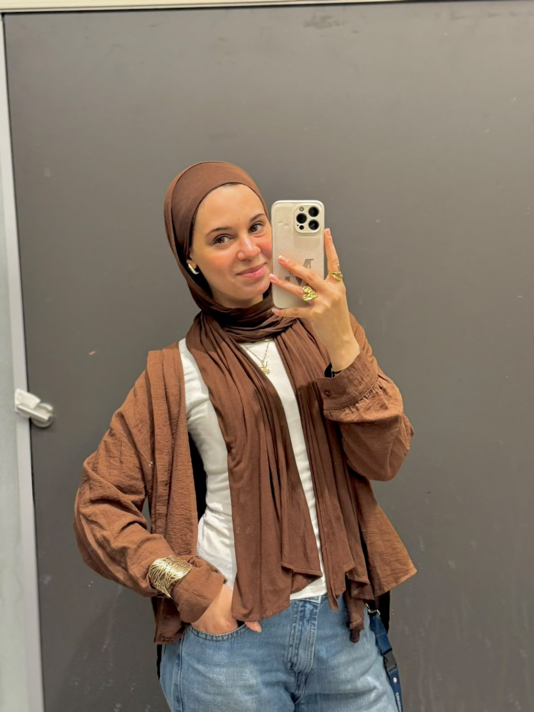
A new rhythm. A brave step. A dream expressed without needing a single word.
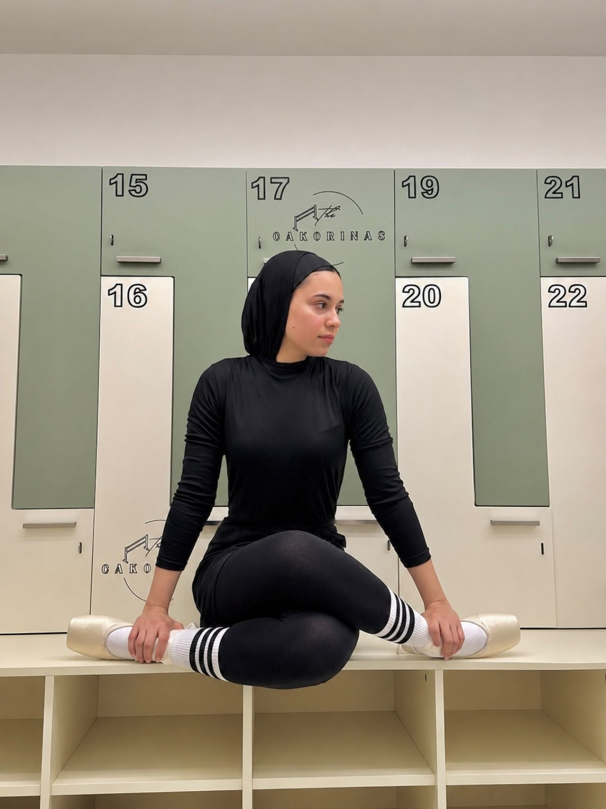
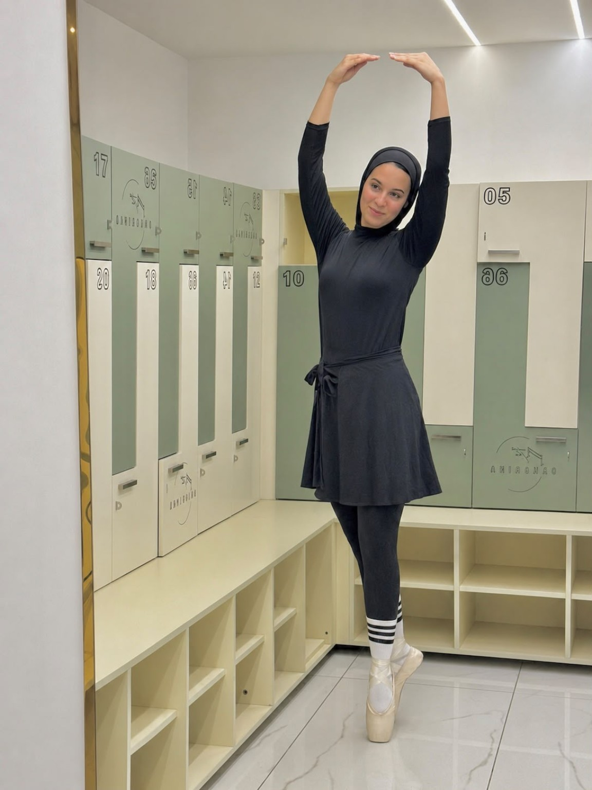
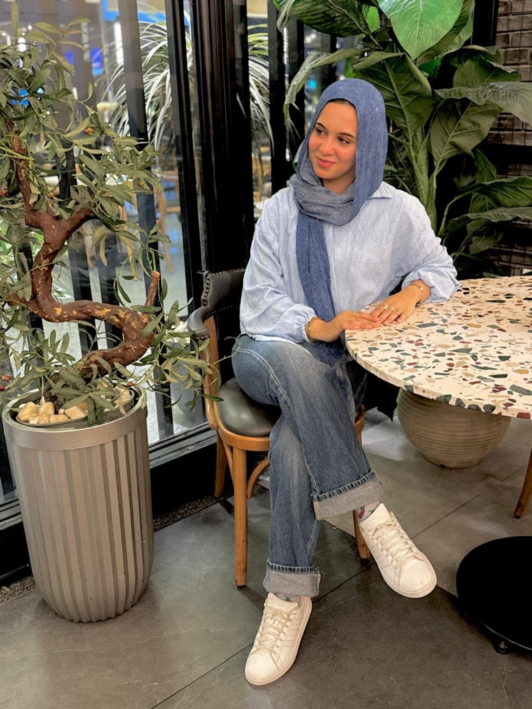
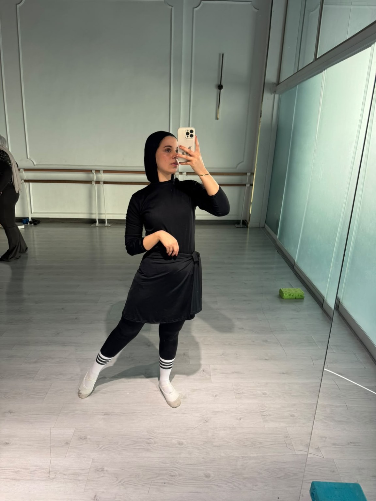
More confident. More herself. Every version of her becoming part of the woman she is today.

26 years of becoming.
26 years of shining.
Some people wait for the moon to become full.
Manora took 26 years.
Happy Birthday, Manora. 🌕